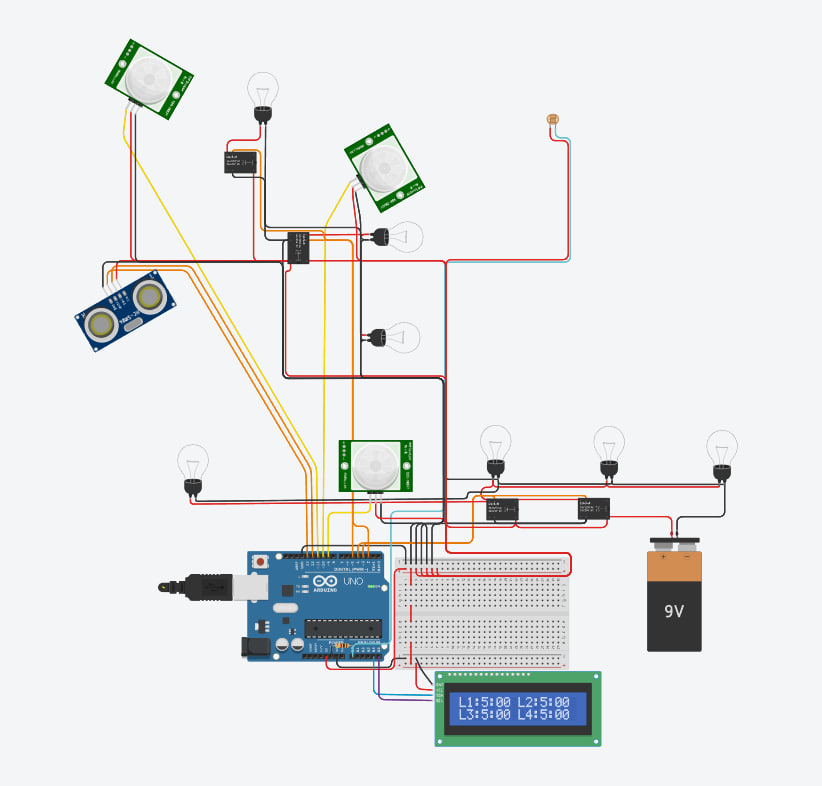

Про проект
Система автоматичного керування освітленням, яка:
- Вмикає світло лише при виявленні руху
- Враховує рівень природного освітлення
- Відображає стан на LCD дисплеї
- Має налаштовуваний час роботи
Використовує Arduino для керування реле на основі даних з датчиків.

Ключові переваги
Енергозбереження
Світло вмикається лише за потреби, що знижує витрати електроенергії
Автоматизація
Не потребує ручного вмикання/вимикання
Моніторинг
LCD дисплей показує стан системи в реальному часі